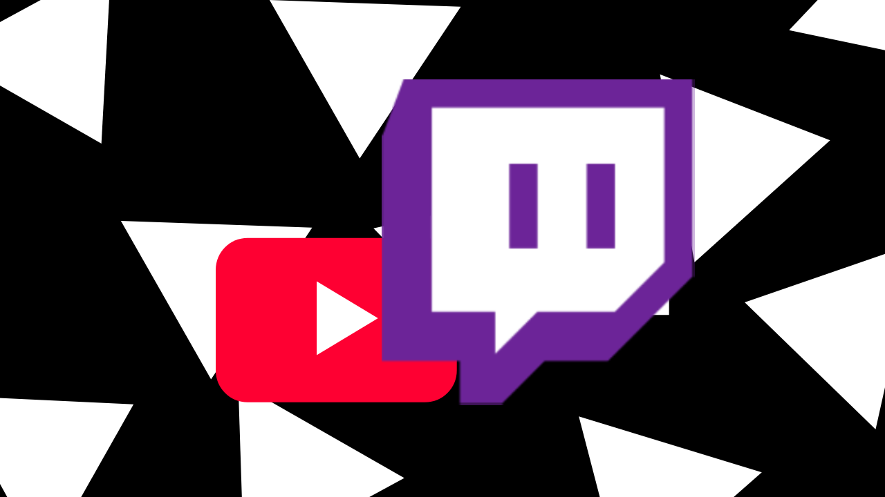

Ceasing transmission on YouTube
This blog post will decribe everything you need to know about StatTube migrating from YouTube, to Twitch. This is our way of recognizing the system of YouTube, and why its not suitable for our platform.
Note: We have decided that on March 22nd 2025, we will cease transmission on YouTube following the irresponsable actions taken against StatTube with the YouTube Partner Program (YPP).
Why is this happening?
Between March 11 and March 17, we got notified of a warning by YouTube for a perceived violation of their terms of service. This was completely incorrect, as we have never violated their terms at all. After we submitted an appeal and provided all reasons why they were wrong, they rejected the application and suspended us from the YouTube Partner Program. Because of this, we have deemed that our content is no longer suitable for their platform.
What happens next?
What will happen on the 22nd? All livestreams currently being broadcasted will be ceased, and a 90 day countdown will begin. We can reapply until June 19th, 2025, so inbetween that time, we will be completely inactive on YouTube.
Will my subscribers be affected? Probably not. Though, we may start a new season for Twitch, and keep S2 on YouTube when they accept us again.
What will happen when the 90 day countdown reaches 0? We will reapply, and start making content on YouTube again. If they deny, we will continue to operate on Twitch.
Why is this even happening? Whats the point? The YPP, was the way that we got funded. With no funds, we cant realy make any new content for you guys to enjoy. Essentially, YouTube is cutting off our way to give you guys content, and we feel that is unfair.
When are you going to get back to YouTube?
Whenever YouTube decides to accept us. In the meantime, in the 90-day period, it would be much appreciated if you supported our Twitch channel instead of our YouTube channel, to tell YouTube to let us in. Support us on Twitch.